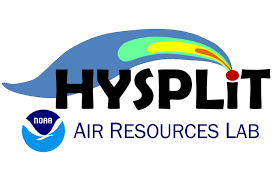
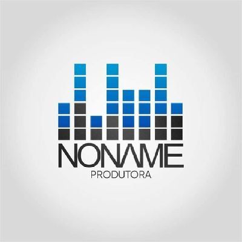
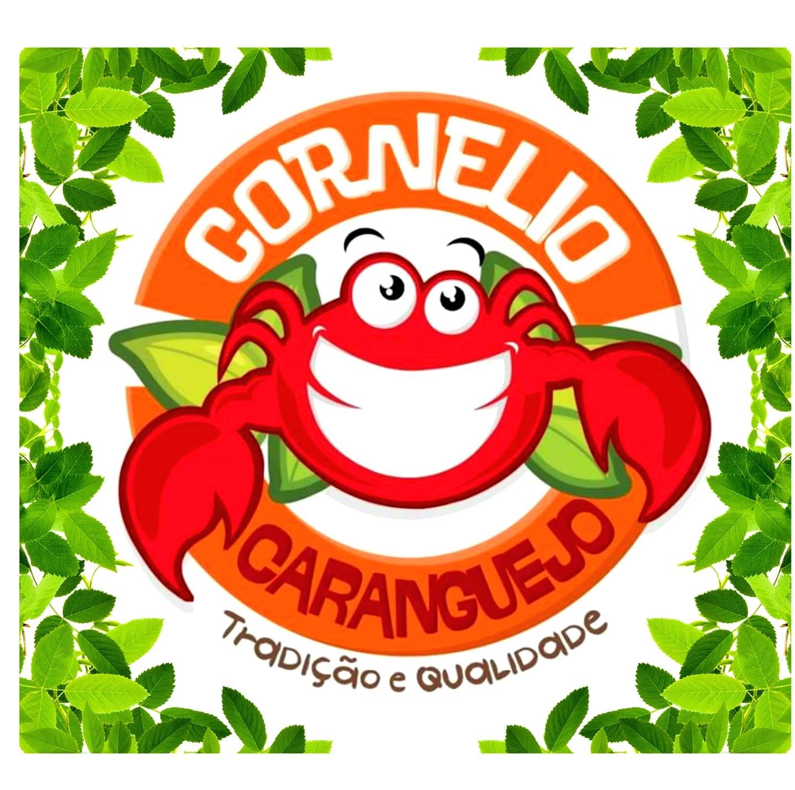
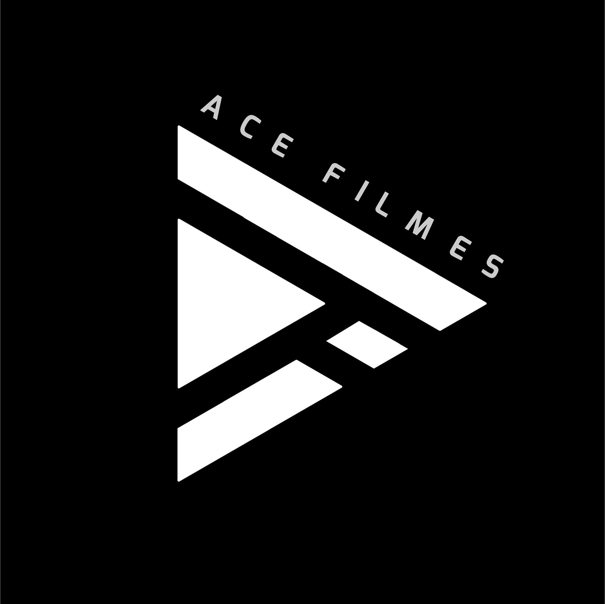
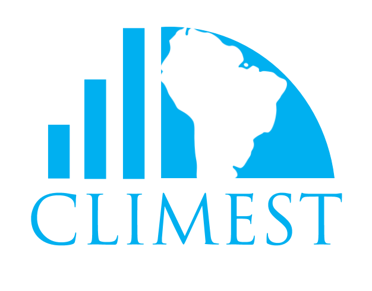

Pesquisador pós-doutor no Centro de Integração de Dados e Conhecimentos para Saúde (CIDACS/Fiocruz-Bahia), doutor e mestre em Ciências Climáticas pela Universidade Federal do Rio Grande do Norte (PPGCC, UFRN), com especialização em análise e simulação de eventos extremos e graduado em Meteorologia pela Universidade Federal do Pará (UFPA). Atuo como analista e cientista de dados. Atuei no Instituto Nacional Uruguaio de Meteorologia (INUMET-Uruguai) e no Instituto SENAI de Energias Renováveis (ISI-ER), além de ter atuado como professor substituto no Departamento de Ciências Atmosféricas e Climáticas (DCAC, UFRN).
Tenho experiência na área de mudanças climáticas, eventos extremos, climatologia, sensoriamento remoto, energias renováveis e meteorologia sinótica.
Faço parte do Grupo de diversos grupos de estudos como INCT Klimapolis, Grupo de Estudos de Observação e Modelagem da Interface Biosfera-Atmosfera (GEOMIBA, UFRN), Modelagem Climática e de Sistemas Complexos (UFRN), Climatologia Teórica e Aplicada (CTA, UFAL), Climatologia Estatística (CLIMEST, UFPI) e o Grupo de Pesquisa de Modelagem e Observação de Química da Atmosfera (GP-MOQA)
Atualmente, compõe a equipe de desenvolvimento da Plataforma de Clima e Meio Ambiente no CIDACS, capaz de gerar novos conhecimentos sobre as relações entre clima e saúde.
Skills
Linguagens e ferramentas.
Python
Python é uma linguagem de programação que permite trabalhar rapidamente e integrar sistemas de forma mais eficaz.
R project
R é um ambiente de software livre para computação estatística e gráficos. Compila e roda em uma ampla variedade de plataformas UNIX, Windows e MacOS.

SQL
O HYSPLIT (Hybrid Single Particle Lagrangian Integrated Trajectory) é um modelo amplamente utilizado para calcular trajetórias de partículas, dispersão e deposição de poluentes na atmosfera.
Power BI
O Power BI é uma coleção de serviços de software, aplicativos e conectores que trabalham juntos para transformar suas fontes de dados não relacionadas em informações coerentes, visualmente envolventes e interativas.
QGIS
QGIS é um aplicativo profissional GIS Livre e e de Código Aberto que é construído a partir de Software Livre e de Código Aberto, Free and Open Source Software (FOSS).
GrADS
O Grid Analysis and Display System (GrADS) é uma ferramenta de desktop interativa usada para fácil acesso, manipulação e visualização de dados de ciências da terra.
Fortran
FORTRAN que significa formula translation é uma linguagem de alto nível (forma de linguagem mais parecida com a linguagem humana), sua versão atual é o "Fortran 95".
Bash
Bash é o shell do Projeto GNU. É um shell compatível com sh que incorpora recursos úteis do shell Korn (ksh) e do shell C (csh).
Clientes

Noname Produtora - Belém/PA
Análise de dados dos clientes aplicando técnicas de modelagem de dados e Machine Learning para previsão e predição de potencias clientes, redução de gastos e direcionamento de marketing.

Cornélio caranguejos – Parnaíba/PI
Análise espacial para determinar a melhor localização de um novo restaurante na região metropolitana de Parnaíba/PI.

Ace Filmes – Belém/PA
Avaliação de potencial público da região metropolitana de Belém/PA. Criação de Dashboard para monitoramento contínuo de gastos e orçamentos

CLIMEST - UFPI
Análise, processamento e armazenamento de dados ambientais, hidrológicos e climatológicos. Realização de relatórios automatizados através do R. Produção gráfica e data mining utilizando os softwares QGIS, GrADS e Python.
CTA - UFAL
Realizando análise estatística de banco de dados, data mining e previsão estatística/estocásticas através de programação pelas linguagens R e Python. Elaborando figuras e mapas espaciais através dos softwares GrADS, R, QGIS e Python.